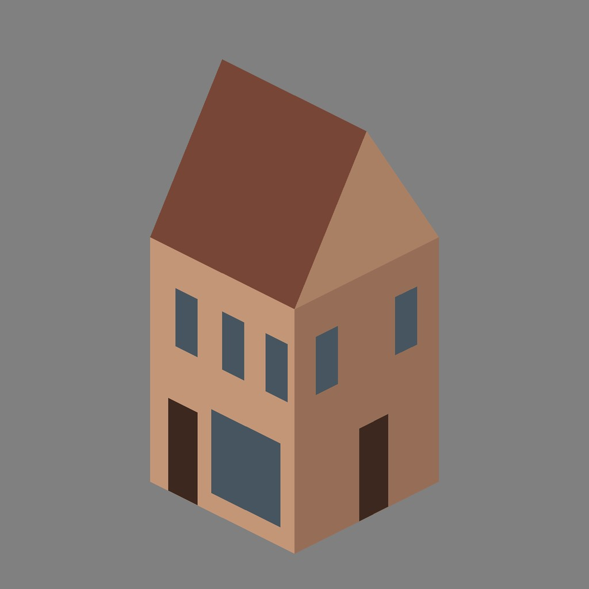
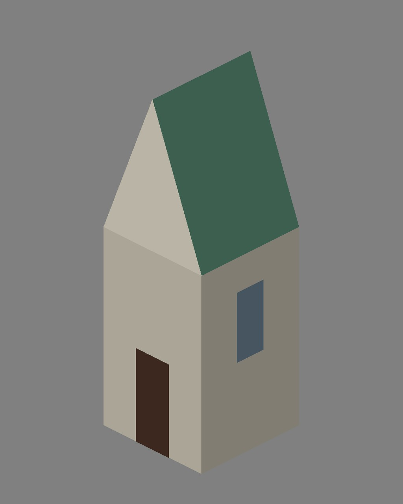
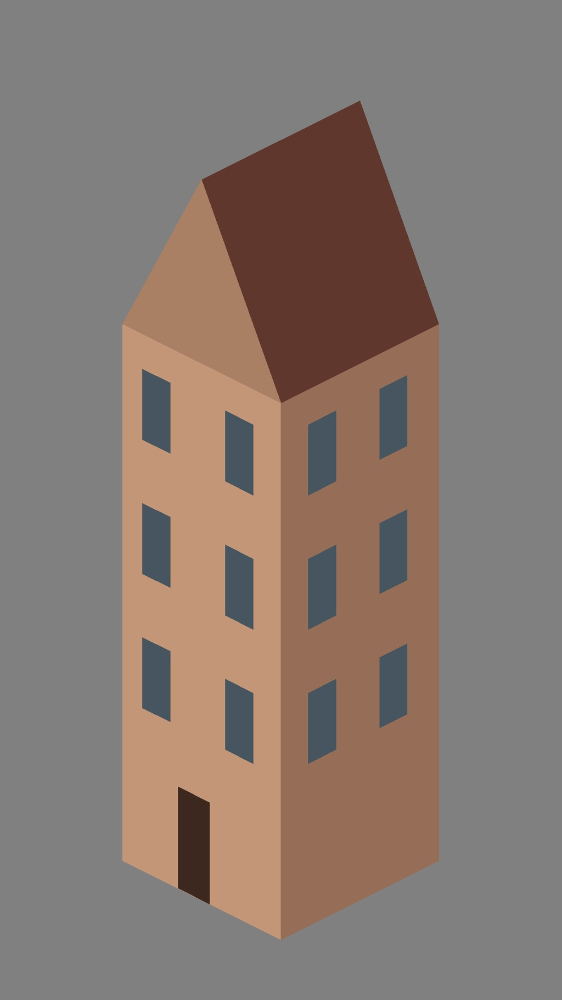

City Watch: Midjourney prompts
Every prompt below already contains links to the reference pictures, so you don't need to upload them. Tap Copy prompt, paste into Midjourney, done. Make 4, upscale the best, download the PNG and send it to Claude.
Job A: the four old buildings (Retexture)
Upload only the one shape drawing shown in each card. It fixes the angle and door size; the prompt brings the style. Too plain? Change --sw 300 to 500. Shape drifting? Use 200.
A · Bakery
1. Save this shape drawing to your phone (press and hold → Save), then in Midjourney: Edit → Upload image → Retexture.

2. Paste this prompt (the style pictures are already linked in it):
a small corner bakery: weathered red brick with cream lime plaster patches, a steep clay-tile roof with a big brick chimney, a striped canvas awning over the wide shop window full of loaves, a loaf-shaped hanging sign, a half-glazed shop door with two stone steps, flower boxes, hand-painted isometric game building, same shape, same angle and same door and window positions as the input, detailed weathered materials, warm lit windows, soft daylight from the upper left, plain flat grey background #808080, no ground, no people, no text --v 7 --sw 300 --sref https://markmarley82-cpu.github.io/City-watch/mj/img/style-exterior-1-mended-drum.jpg https://markmarley82-cpu.github.io/City-watch/mj/img/style-exterior-2-archives.jpg
A · Wayside Shrine
1. Save this shape drawing to your phone (press and hold → Save), then in Midjourney: Edit → Upload image → Retexture.

2. Paste this prompt (the style pictures are already linked in it):
a tiny stone shrine to a minor god: pale weathered stone, a steep copper roof gone green, a stone finial, an arched oak door with a carved stone surround, a candle-lit offering niche, ivy and moss, hand-painted isometric game building, same shape, same angle and same door and window positions as the input, detailed weathered materials, warm lit windows, soft daylight from the upper left, plain flat grey background #808080, no ground, no people, no text --v 7 --sw 300 --sref https://markmarley82-cpu.github.io/City-watch/mj/img/style-exterior-1-mended-drum.jpg https://markmarley82-cpu.github.io/City-watch/mj/img/style-exterior-2-archives.jpg
A · Crooked Alley House
1. Save this shape drawing to your phone (press and hold → Save), then in Midjourney: Edit → Upload image → Retexture.

2. Paste this prompt (the style pictures are already linked in it):
a tall narrow four-storey town house: timber framing over soot-dark brick, small leaded windows with warm light, a steep slate roof with a twisted brick chimney, a lantern by the front door, washing hanging from an upper window, hand-painted isometric game building, same shape, same angle and same door and window positions as the input, detailed weathered materials, warm lit windows, soft daylight from the upper left, plain flat grey background #808080, no ground, no people, no text --v 7 --sw 300 --sref https://markmarley82-cpu.github.io/City-watch/mj/img/style-exterior-1-mended-drum.jpg https://markmarley82-cpu.github.io/City-watch/mj/img/style-exterior-2-archives.jpg
A · Watch Outpost
1. Save this shape drawing to your phone (press and hold → Save), then in Midjourney: Edit → Upload image → Retexture.

2. Paste this prompt (the style pictures are already linked in it):
a City Watch outpost: a stone watch tower with a slate cap behind a two-storey timber-framed guard room with a clay-tile roof, heavy studded doors with lanterns, a painted Watch shield with a lantern emblem above the door, a notice board, hand-painted isometric game building, same shape, same angle and same door and window positions as the input, detailed weathered materials, warm lit windows, soft daylight from the upper left, plain flat grey background #808080, no ground, no people, no text --v 7 --sw 300 --sref https://markmarley82-cpu.github.io/City-watch/mj/img/style-exterior-1-mended-drum.jpg https://markmarley82-cpu.github.io/City-watch/mj/img/style-exterior-2-archives.jpg
Job B: inside views for the new buildings
The two links at the start of each prompt are the layout guide and the bakers' room; the links after --sref set the style.
B · Cobbler
Normal Imagine prompt, nothing to upload. Just paste:
https://markmarley82-cpu.github.io/City-watch/mj/img/guide-interior.jpg https://markmarley82-cpu.github.io/City-watch/mj/img/style-interior-1-bakers.jpg A cobbler's workshop: a low workbench with lasts and hammers, shelves of boots and shoes, hides hanging from a beam, a leather-cutting table, a small counter by the door with a boot-shaped sign, wood-shaving floor. isometric cutaway interior of one room, 2:1 isometric game diorama exactly like the reference, front walls removed and shown only as a low cut stone sill, back-left and back-right walls standing with windows and beams, the entrance doorway in the front-right wall at the lower right of the image, the room filling the frame, a wide clear walkable floor through the middle of the room with furniture against the walls, every object sized for people about 1.75 m tall, warm painterly hand-painted texture, soft light from the windows, solid pure black background outside the room, no people, no text --ar 3:2 --v 7 --style raw --iw 1 --sw 300 --no people, text, watermark, frame, ceiling, roof, perspective --sref https://markmarley82-cpu.github.io/City-watch/mj/img/style-interior-1-bakers.jpg https://markmarley82-cpu.github.io/City-watch/mj/img/style-interior-2-butchers.jpg
B · Pawnbroker
Normal Imagine prompt, nothing to upload. Just paste:
https://markmarley82-cpu.github.io/City-watch/mj/img/guide-interior.jpg https://markmarley82-cpu.github.io/City-watch/mj/img/style-interior-1-bakers.jpg A cramped pawnbroker's shop: a high counter with a brass grille, shelves crammed with clocks, instruments, candlesticks and odd bundles with paper tags, a locked glass cabinet, three brass balls hanging inside the window, a safe in the corner. isometric cutaway interior of one room, 2:1 isometric game diorama exactly like the reference, front walls removed and shown only as a low cut stone sill, back-left and back-right walls standing with windows and beams, the entrance doorway in the front-right wall at the lower right of the image, the room filling the frame, a wide clear walkable floor through the middle of the room with furniture against the walls, every object sized for people about 1.75 m tall, warm painterly hand-painted texture, soft light from the windows, solid pure black background outside the room, no people, no text --ar 3:2 --v 7 --style raw --iw 1 --sw 300 --no people, text, watermark, frame, ceiling, roof, perspective --sref https://markmarley82-cpu.github.io/City-watch/mj/img/style-interior-1-bakers.jpg https://markmarley82-cpu.github.io/City-watch/mj/img/style-interior-2-butchers.jpg
B · Curry house
Normal Imagine prompt, nothing to upload. Just paste:
https://markmarley82-cpu.github.io/City-watch/mj/img/guide-interior.jpg https://markmarley82-cpu.github.io/City-watch/mj/img/style-interior-1-bakers.jpg A small curry house: a kitchen at the back with big copper pots on a brick range and a hood flue, spice jars and sacks, four plain tables with benches in the front room, a serving hatch, lanterns, a bowl painted on the window. isometric cutaway interior of one room, 2:1 isometric game diorama exactly like the reference, front walls removed and shown only as a low cut stone sill, back-left and back-right walls standing with windows and beams, the entrance doorway in the front-right wall at the lower right of the image, the room filling the frame, a wide clear walkable floor through the middle of the room with furniture against the walls, every object sized for people about 1.75 m tall, warm painterly hand-painted texture, soft light from the windows, solid pure black background outside the room, no people, no text --ar 3:2 --v 7 --style raw --iw 1 --sw 300 --no people, text, watermark, frame, ceiling, roof, perspective --sref https://markmarley82-cpu.github.io/City-watch/mj/img/style-interior-1-bakers.jpg https://markmarley82-cpu.github.io/City-watch/mj/img/style-interior-2-butchers.jpg
B · Lodging house
Normal Imagine prompt, nothing to upload. Just paste:
https://markmarley82-cpu.github.io/City-watch/mj/img/guide-interior.jpg https://markmarley82-cpu.github.io/City-watch/mj/img/style-interior-1-bakers.jpg A cheap lodging house's common room: a row of narrow iron beds and straw mattresses along the walls, a stove with a kettle, a rough table with a candle, a coat rack, a ledger desk by the door for the landlord. isometric cutaway interior of one room, 2:1 isometric game diorama exactly like the reference, front walls removed and shown only as a low cut stone sill, back-left and back-right walls standing with windows and beams, the entrance doorway in the front-right wall at the lower right of the image, the room filling the frame, a wide clear walkable floor through the middle of the room with furniture against the walls, every object sized for people about 1.75 m tall, warm painterly hand-painted texture, soft light from the windows, solid pure black background outside the room, no people, no text --ar 3:2 --v 7 --style raw --iw 1 --sw 300 --no people, text, watermark, frame, ceiling, roof, perspective --sref https://markmarley82-cpu.github.io/City-watch/mj/img/style-interior-1-bakers.jpg https://markmarley82-cpu.github.io/City-watch/mj/img/style-interior-2-butchers.jpg
B · Bonded warehouse
Normal Imagine prompt, nothing to upload. Just paste:
https://markmarley82-cpu.github.io/City-watch/mj/img/guide-interior.jpg https://markmarley82-cpu.github.io/City-watch/mj/img/style-interior-1-bakers.jpg A bonded dock warehouse: stacked crates, barrels and wrapped bales marked with numbers, a hoist and chain from a beam, a clerk's high desk with ledgers and a lamp, a weighing scale, wide double doors. isometric cutaway interior of one room, 2:1 isometric game diorama exactly like the reference, front walls removed and shown only as a low cut stone sill, back-left and back-right walls standing with windows and beams, the entrance doorway in the front-right wall at the lower right of the image, the room filling the frame, a wide clear walkable floor through the middle of the room with furniture against the walls, every object sized for people about 1.75 m tall, warm painterly hand-painted texture, soft light from the windows, solid pure black background outside the room, no people, no text --ar 3:2 --v 7 --style raw --iw 1 --sw 300 --no people, text, watermark, frame, ceiling, roof, perspective --sref https://markmarley82-cpu.github.io/City-watch/mj/img/style-interior-1-bakers.jpg https://markmarley82-cpu.github.io/City-watch/mj/img/style-interior-2-butchers.jpg
B · Rope-maker
Normal Imagine prompt, nothing to upload. Just paste:
https://markmarley82-cpu.github.io/City-watch/mj/img/guide-interior.jpg https://markmarley82-cpu.github.io/City-watch/mj/img/style-interior-1-bakers.jpg A rope-maker's shed: coils of rope and hemp bundles, a long rope-walk bench with a twisting wheel and hooks along one wall, tar buckets, a workbench with knives and fids. isometric cutaway interior of one room, 2:1 isometric game diorama exactly like the reference, front walls removed and shown only as a low cut stone sill, back-left and back-right walls standing with windows and beams, the entrance doorway in the front-right wall at the lower right of the image, the room filling the frame, a wide clear walkable floor through the middle of the room with furniture against the walls, every object sized for people about 1.75 m tall, warm painterly hand-painted texture, soft light from the windows, solid pure black background outside the room, no people, no text --ar 3:2 --v 7 --style raw --iw 1 --sw 300 --no people, text, watermark, frame, ceiling, roof, perspective --sref https://markmarley82-cpu.github.io/City-watch/mj/img/style-interior-1-bakers.jpg https://markmarley82-cpu.github.io/City-watch/mj/img/style-interior-2-butchers.jpg
B · Ship chandler
Normal Imagine prompt, nothing to upload. Just paste:
https://markmarley82-cpu.github.io/City-watch/mj/img/guide-interior.jpg https://markmarley82-cpu.github.io/City-watch/mj/img/style-interior-1-bakers.jpg A ship chandler's shop: shelves of lanterns, blocks and pulleys, coils of line, oilskins, tins and barrels of supplies, an anchor by the counter, nautical charts pinned up, a counter with a till. isometric cutaway interior of one room, 2:1 isometric game diorama exactly like the reference, front walls removed and shown only as a low cut stone sill, back-left and back-right walls standing with windows and beams, the entrance doorway in the front-right wall at the lower right of the image, the room filling the frame, a wide clear walkable floor through the middle of the room with furniture against the walls, every object sized for people about 1.75 m tall, warm painterly hand-painted texture, soft light from the windows, solid pure black background outside the room, no people, no text --ar 3:2 --v 7 --style raw --iw 1 --sw 300 --no people, text, watermark, frame, ceiling, roof, perspective --sref https://markmarley82-cpu.github.io/City-watch/mj/img/style-interior-1-bakers.jpg https://markmarley82-cpu.github.io/City-watch/mj/img/style-interior-2-butchers.jpg
B · Quay lodging
Normal Imagine prompt, nothing to upload. Just paste:
https://markmarley82-cpu.github.io/City-watch/mj/img/guide-interior.jpg https://markmarley82-cpu.github.io/City-watch/mj/img/style-interior-1-bakers.jpg A sailors' quay lodging: hammocks slung from the beams and a few bunks, sea chests, a stove, a long table with tankards, oilskins on pegs, a small bar counter by the door. isometric cutaway interior of one room, 2:1 isometric game diorama exactly like the reference, front walls removed and shown only as a low cut stone sill, back-left and back-right walls standing with windows and beams, the entrance doorway in the front-right wall at the lower right of the image, the room filling the frame, a wide clear walkable floor through the middle of the room with furniture against the walls, every object sized for people about 1.75 m tall, warm painterly hand-painted texture, soft light from the windows, solid pure black background outside the room, no people, no text --ar 3:2 --v 7 --style raw --iw 1 --sw 300 --no people, text, watermark, frame, ceiling, roof, perspective --sref https://markmarley82-cpu.github.io/City-watch/mj/img/style-interior-1-bakers.jpg https://markmarley82-cpu.github.io/City-watch/mj/img/style-interior-2-butchers.jpg
B · Smithy
Normal Imagine prompt, nothing to upload. Just paste:
https://markmarley82-cpu.github.io/City-watch/mj/img/guide-interior.jpg https://markmarley82-cpu.github.io/City-watch/mj/img/style-interior-1-bakers.jpg A blacksmith's forge: a glowing coal forge with bellows and a hood, an anvil on a stump, a quenching trough, tongs and hammers on racks, horseshoes and ironwork on the walls, a grindstone. isometric cutaway interior of one room, 2:1 isometric game diorama exactly like the reference, front walls removed and shown only as a low cut stone sill, back-left and back-right walls standing with windows and beams, the entrance doorway in the front-right wall at the lower right of the image, the room filling the frame, a wide clear walkable floor through the middle of the room with furniture against the walls, every object sized for people about 1.75 m tall, warm painterly hand-painted texture, soft light from the windows, solid pure black background outside the room, no people, no text --ar 3:2 --v 7 --style raw --iw 1 --sw 300 --no people, text, watermark, frame, ceiling, roof, perspective --sref https://markmarley82-cpu.github.io/City-watch/mj/img/style-interior-1-bakers.jpg https://markmarley82-cpu.github.io/City-watch/mj/img/style-interior-2-butchers.jpg
B · Cooper
Normal Imagine prompt, nothing to upload. Just paste:
https://markmarley82-cpu.github.io/City-watch/mj/img/guide-interior.jpg https://markmarley82-cpu.github.io/City-watch/mj/img/style-interior-1-bakers.jpg A cooper's workshop: barrels in every stage of making, staves stacked and steaming, iron hoops on pegs, a shaving horse, a fire basket for bending staves, adzes and drawknives on the wall. isometric cutaway interior of one room, 2:1 isometric game diorama exactly like the reference, front walls removed and shown only as a low cut stone sill, back-left and back-right walls standing with windows and beams, the entrance doorway in the front-right wall at the lower right of the image, the room filling the frame, a wide clear walkable floor through the middle of the room with furniture against the walls, every object sized for people about 1.75 m tall, warm painterly hand-painted texture, soft light from the windows, solid pure black background outside the room, no people, no text --ar 3:2 --v 7 --style raw --iw 1 --sw 300 --no people, text, watermark, frame, ceiling, roof, perspective --sref https://markmarley82-cpu.github.io/City-watch/mj/img/style-interior-1-bakers.jpg https://markmarley82-cpu.github.io/City-watch/mj/img/style-interior-2-butchers.jpg
B · Butcher
Normal Imagine prompt, nothing to upload. Just paste:
https://markmarley82-cpu.github.io/City-watch/mj/img/guide-interior.jpg https://markmarley82-cpu.github.io/City-watch/mj/img/style-interior-1-bakers.jpg A butcher's shop: a marble counter, hooks with hanging joints and sausages along a rail, a heavy chopping block with cleavers, sawdust on the floor, a scale, a cold room door at the back. isometric cutaway interior of one room, 2:1 isometric game diorama exactly like the reference, front walls removed and shown only as a low cut stone sill, back-left and back-right walls standing with windows and beams, the entrance doorway in the front-right wall at the lower right of the image, the room filling the frame, a wide clear walkable floor through the middle of the room with furniture against the walls, every object sized for people about 1.75 m tall, warm painterly hand-painted texture, soft light from the windows, solid pure black background outside the room, no people, no text --ar 3:2 --v 7 --style raw --iw 1 --sw 300 --no people, text, watermark, frame, ceiling, roof, perspective --sref https://markmarley82-cpu.github.io/City-watch/mj/img/style-interior-1-bakers.jpg https://markmarley82-cpu.github.io/City-watch/mj/img/style-interior-2-butchers.jpg
B · Apothecary
Normal Imagine prompt, nothing to upload. Just paste:
https://markmarley82-cpu.github.io/City-watch/mj/img/guide-interior.jpg https://markmarley82-cpu.github.io/City-watch/mj/img/style-interior-1-bakers.jpg An apothecary: a wall of small labelled drawers, shelves of glass jars and bottles, a pestle and mortar on the counter, bundles of drying herbs from the beams, a brass balance, a small brewing table with a burner. isometric cutaway interior of one room, 2:1 isometric game diorama exactly like the reference, front walls removed and shown only as a low cut stone sill, back-left and back-right walls standing with windows and beams, the entrance doorway in the front-right wall at the lower right of the image, the room filling the frame, a wide clear walkable floor through the middle of the room with furniture against the walls, every object sized for people about 1.75 m tall, warm painterly hand-painted texture, soft light from the windows, solid pure black background outside the room, no people, no text --ar 3:2 --v 7 --style raw --iw 1 --sw 300 --no people, text, watermark, frame, ceiling, roof, perspective --sref https://markmarley82-cpu.github.io/City-watch/mj/img/style-interior-1-bakers.jpg https://markmarley82-cpu.github.io/City-watch/mj/img/style-interior-2-butchers.jpg
B · Cooper workshop (yours)
Normal Imagine prompt, nothing to upload. Just paste:
https://markmarley82-cpu.github.io/City-watch/mj/img/guide-interior.jpg https://markmarley82-cpu.github.io/City-watch/mj/img/style-interior-1-bakers.jpg A big cooper's yard workshop: barrels in every stage of making, big tuns and casks, staves stacked and steaming, iron hoops on pegs, a crane for lifting casks, a loft ladder. isometric cutaway interior of one room, 2:1 isometric game diorama exactly like the reference, front walls removed and shown only as a low cut stone sill, back-left and back-right walls standing with windows and beams, the entrance doorway in the front-right wall at the lower right of the image, the room filling the frame, a wide clear walkable floor through the middle of the room with furniture against the walls, every object sized for people about 1.75 m tall, warm painterly hand-painted texture, soft light from the windows, solid pure black background outside the room, no people, no text --ar 3:2 --v 7 --style raw --iw 1 --sw 300 --no people, text, watermark, frame, ceiling, roof, perspective --sref https://markmarley82-cpu.github.io/City-watch/mj/img/style-interior-1-bakers.jpg https://markmarley82-cpu.github.io/City-watch/mj/img/style-interior-2-butchers.jpg